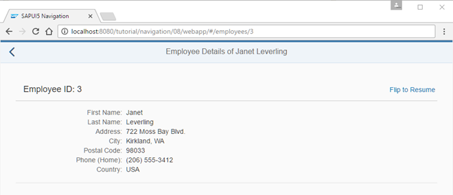
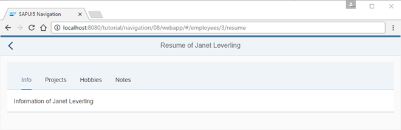
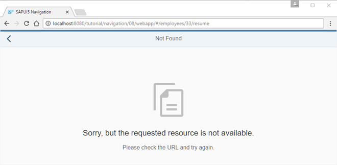
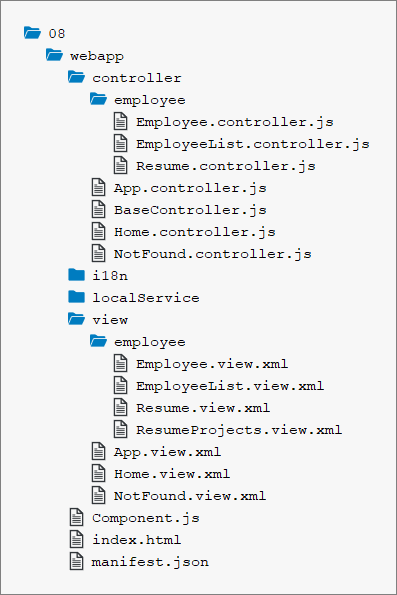

You can view and download all files in the Samples in the Demo Kit at Routing and Navigation - Step 8.

<mvc:View
controllerName="sap.ui.demo.nav.controller.employee.Employee"
xmlns="sap.m"
xmlns:mvc="sap.ui.core.mvc"
xmlns:f="sap.ui.layout.form"
busyIndicatorDelay="0">
<Page
id="employeePage"
title="{i18n>EmployeeDetailsOf} {FirstName} {LastName}"
showNavButton="true"
navButtonPress=".onNavBack"
class="sapUiResponsiveContentPadding">
<content>
<Panel
id="employeePanel"
width="auto"
class="sapUiResponsiveMargin sapUiNoContentPadding">
<headerToolbar>
<Toolbar>
<Title text="{i18n>EmployeeIDColon} {EmployeeID}" level="H2"/>
<ToolbarSpacer />
<Link text="{i18n>FlipToResume}" tooltip="{i18n>FlipToResume.tooltip}" press=".onShowResume"/>
</Toolbar>
</headerToolbar>
<content>
...
</content>
</Panel>
</content>
</Page>
</mvc:View>First we add the Flip to Resume link to the Employee Details view to trigger the navigation to the resume of the employee that is currently displayed.
sap.ui.define([
"sap/ui/demo/nav/controller/BaseController"
], function (BaseController) {
"use strict";
return BaseController.extend("sap.ui.demo.nav.controller.employee.Employee", {
...
_onBindingChange : function (oEvent) {
// No data for the binding
if (!this.getView().getBindingContext()) {
this.getRouter().getTargets().display("notFound");
}
}
...
},
onShowResume : function (oEvent) {
var oCtx = this.getView().getElementBinding().getBoundContext();
this.getRouter().navTo("employeeResume", {
employeeId : oCtx.getProperty("EmployeeID")
});
}
});
}); Then we change the Employee.controller.js file by adding the press
handler onShowResume for the Flip to Resume
link. The handler simply navigates to a new route employeeResume
and fills the mandatory parameter employeeId with the property
EmployeeID from the view's bound context. The route
employeeResume is not available yet, so we will have to add it
to our routing configuration.
{
"_version": "1.12.0",
"sap.app": {
...
},
"sap.ui": {
...
},
"sap.ui5": {
...
"routing": {
"config": {
"routerClass": "sap.m.routing.Router",
"type": "View",
"viewType": "XML",
"path": "sap.ui.demo.nav.view",
"controlId": "app",
"controlAggregation": "pages",
"transition": "slide",
"bypassed": {
"target": "notFound"
}
},
"routes": [{
"pattern": "",
"name": "appHome",
"target": "home"
}, {
"pattern": "employees",
"name": "employeeList",
"target": "employees"
}, {
"pattern": "employees/{employeeId}",
"name": "employee",
"target": "employee"
}, {
"pattern": "employees/{employeeId}/resume",
"name": "employeeResume",
"target": "employeeResume"
}],
"targets": {
"home": {
"id": "home",
"name": "Home",
"level" : 1
},
"notFound": {
"id": "notFound",
"name": "NotFound",
"transition": "show"
},
"employees": {
"id": "employees",
"path": "sap.ui.demo.nav.view.employee",
"name": "EmployeeList",
"level" : 2
},
"employee": {
"id": "employee",
"name": "employee.Employee",
"level" : 3
},
"employeeResume": {
"id": "resume",
"name": "employee.Resume",
"level" : 4,
"transition": "flip"
}
}
}
}
}In the routing configuration, we add a new route employeeResume
which references a target with the same name. The route's pattern expects an
{employeeId} as a mandatory parameter and ends with the static
string /resume.
The target employeeResume references the view
employee.Resume that we are about to create. The target's
level is 4; compared to the employee target
this is one level lower again. To configure a flip navigation, we simply set the
transition of our target to flip. Together with the correct
level configuration this will trigger the correct forward and
backward flip navigation whenever the target is displayed.
Possible values for the transition parameter are:
slide (default)
flip
show
fade
You can also implement your own transitions and add it to a control that
extends sap.m.NavContainer (for example,
sap.m.App or sap.m.SplitApp). For
more information, see the API Reference:
NavContainer.
<mvc:View
controllerName="sap.ui.demo.nav.controller.employee.Resume"
xmlns="sap.m"
xmlns:mvc="sap.ui.core.mvc">
<Page
title="{i18n>ResumeOf} {FirstName} {LastName}"
id="employeeResumePage"
showNavButton="true"
navButtonPress=".onNavBack">
<content>
<IconTabBar
id="iconTabBar"
headerBackgroundDesign="Transparent"
class="sapUiResponsiveContentPadding"
binding="{Resume}">
<items>
<IconTabFilter id="infoTab" text="{i18n>tabInfo}" key="Info">
<Text text="{Information}"/>
</IconTabFilter>
<IconTabFilter id="projectsTab" text="{i18n>tabProjects}" key="Projects">
<mvc:XMLView viewName="sap.ui.demo.nav.view.employee.ResumeProjects"></mvc:XMLView>
</IconTabFilter>
<IconTabFilter id="hobbiesTab" text="{i18n>tabHobbies}" key="Hobbies">
<Text text="{Hobbies}"/>
</IconTabFilter>
<IconTabFilter id="notesTab" text="{i18n>tabNotes}" key="Notes">
<Text text="{Notes}"/>
</IconTabFilter>
</items>
</IconTabBar>
</content>
</Page>
</mvc:View>
Create a file Resume.view.xml inside the
webapp/view/employee folder. The view uses an
IconTabBar to display the resume data. Therefore, its binding
attribute is set to {Resume}.
In the IconTabBar we display four tabs. Three of them simply use a
Text control to display the data from the service. The
Projects tab uses a nested XML view to display the
projects of the employee. OpenUI5 takes care of
loading the XML view automatically when the user navigates to the
Resume page.
sap.ui.define([
"sap/ui/demo/nav/controller/BaseController"
], function (BaseController) {
"use strict";
return BaseController.extend("sap.ui.demo.nav.controller.employee.Resume", {
onInit: function () {
var oRouter = this.getRouter();
oRouter.getRoute("employeeResume").attachMatched(this._onRouteMatched, this);
},
_onRouteMatched : function (oEvent) {
var oArgs, oView;
oArgs = oEvent.getParameter("arguments");
oView = this.getView();
oView.bindElement({
path : "/Employees(" + oArgs.employeeId + ")",
events : {
change: this._onBindingChange.bind(this),
dataRequested: function (oEvent) {
oView.setBusy(true);
},
dataReceived: function (oEvent) {
oView.setBusy(false);
}
}
});
},
_onBindingChange : function (oEvent) {
// No data for the binding
if (!this.getView().getBindingContext()) {
this.getRouter().getTargets().display("notFound");
}
}
});
});Create a file Resumee.controller.js in the
webapp/controller/employee folder. In this controller, we make
sure to bind the view to the correct employee whenever the
employeeResume route has matched. We have already used this
approach in the previous step so you should be able to recognize the building blocks
in the code above. Again, in case the user cannot be found we display the
notFound target.
<mvc:View xmlns="sap.m" xmlns:mvc="sap.ui.core.mvc">
<Text text="{Projects}"/>
</mvc:View>Create a file ResumeProjects.view.xml in the
webapp/view/employee folder. This view does not have a
controller as we don't need it. It just displays a Text control
with the projects text of the selected employee. It illustrates that using nested
views works just fine in combination with navigation and routing in OpenUI5.
For more complex applications, the performance is significantly increased if parts of the UI are only loaded when the user is actively selecting it. In this example, the view is always loaded even though the user never decided to display the project information. In the next steps, we will extend the UI so that the content is loaded "lazy" by OpenUI5 only when the filter item is clicked. The back-end service will fetch the data only on request and the UI will only have to be updated with the selected data instead of loading all data.
...
ResumeOf=Resume of
tabInfo=Info
tabProjects=Projects
tabHobbies=Hobbies
tabNotes=Notes
FlipToResume=Flip to Resume
FlipToResume.tooltip=See the resume of this employeeAdd the new texts to the i18n.properties file.
You can go to webapp/index.html#/employees/3 and click on the
Flip to Resume link to be redirected with a nice flip
transition to the employee's resume. The back navigation uses a reverse flip
navigation to get back to the Employee Details page. You can
also directly navigate to webapp/index.html#/employees/3/resume or
webapp/index.html#/employees/33/resume to see what happens.